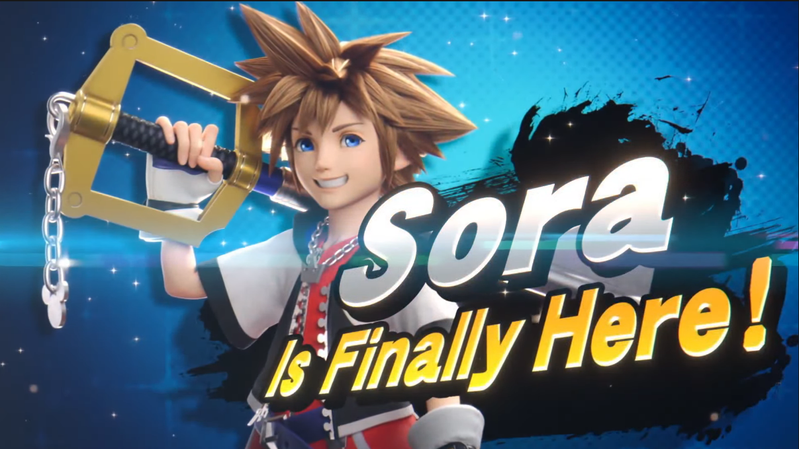

Sora from Kingdom Hearts has recently joined Super Smash Bros Ultimate. Back during the previous Smash Bros game, a poll was held to find the most requested characters for Super Smash Bros, and Sora got the most votes. Being the most requested fighter, he was the perfect choice to be the final character of Super Smash Bros Ultimate
For more information, visit the Super Smash Bros Wiki.
Not long ago, Nintendo released Nintendo Switch Online + Expansion Pack for the Nintendo Switch. As part of the new plan, members are offered Nintendo 64 games. Right now, these include games like:
More games are coming as well, click the image below for more information